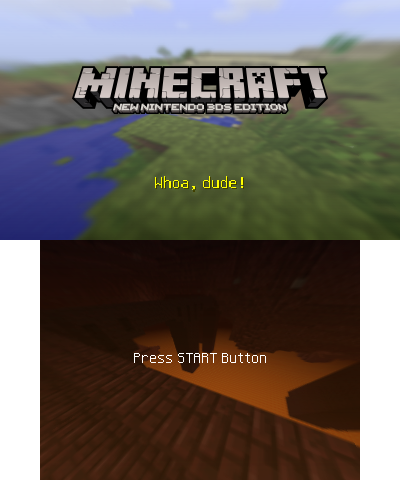

Welcome to the Minecraft New Nintendo 3DS Edition Wiki!

Minecraft: New Nintendo 3DS Edition was the edition of Minecraft developed by Other Ocean Interactive and Mojang Studios for the New Nintendo 3DS/2DS systems, but was not compatible with the original Nintendo 3DS/2DS systems. It was released digitally on the Nintendo eShop simultaneously in North America and Japan on September 13, 2017, hours after its announcement during a Nintendo Direct, and physically in North America on November 10, 2017. The game was digitally released worldwide on September 20, 2018, one year and seven days after the original release. Updates for this version were discontinued with 1.9.19 on January 15, 2019.